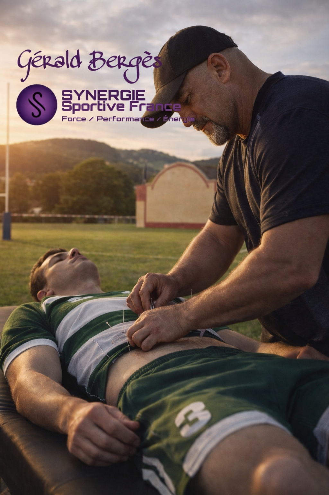
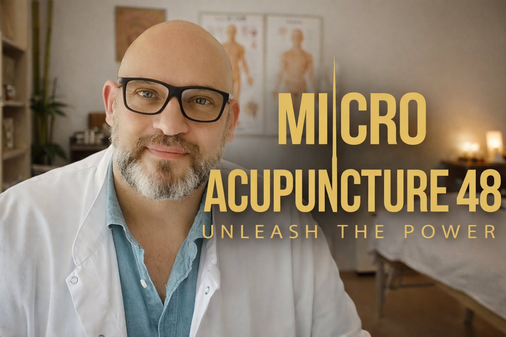
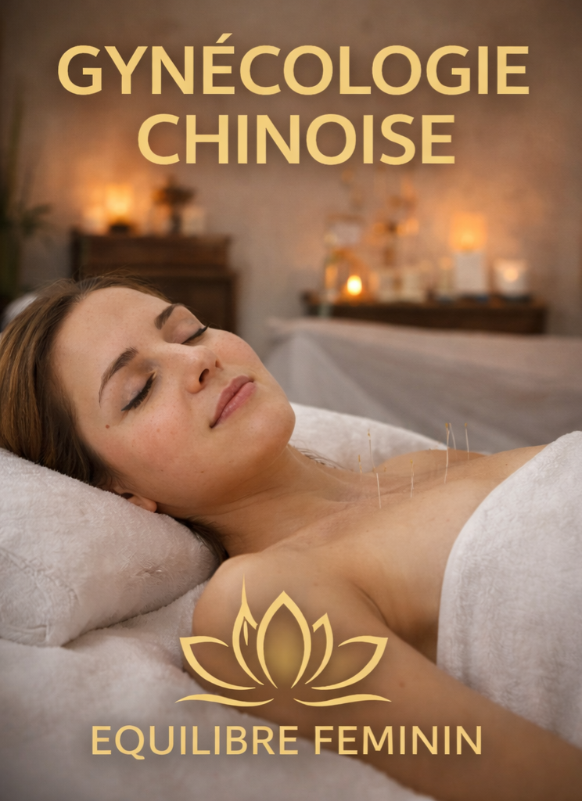
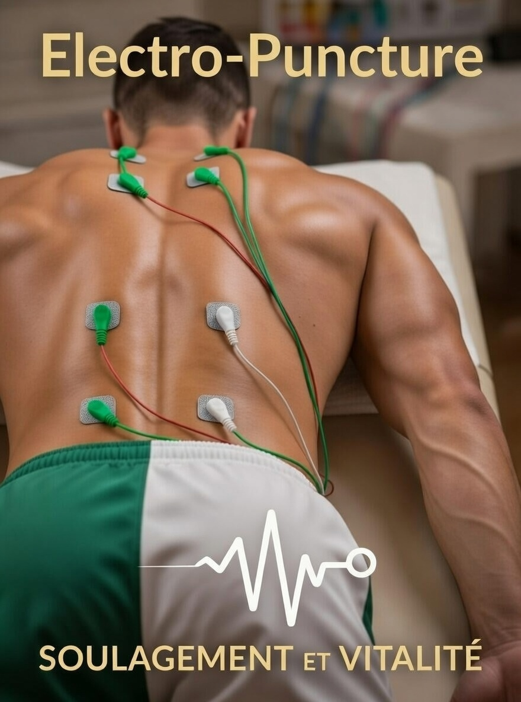

Sport et Oculaire – Hasparren, Pays Basque
Tous les Lundis sur Rendez-Vous
Centre LUMA
37 Rue Francis Jammes
64240 Hasparren – Pays Basque
Bienvenue au cabinet d'acupuncture de Gérald Bergès à Hasparren, au cœur du Pays Basque. Spécialisé en médecine traditionnelle chinoise, il vous accompagne avec une expertise reconnue en acupuncture sportive (Synergie Sport), en acupuncture oculaire (MA48), en gynécologie chinoise et en électro-puncture. Consultations sur rendez-vous, chaque lundi au Centre LUMA.

La Synergie Sport est une approche innovante qui combine l'acupuncture traditionnelle chinoise avec les besoins spécifiques des sportifs. Cette méthode permet d'optimiser les performances athlétiques, d'accélérer la récupération musculaire et de prévenir les blessures.
Que vous soyez sportif amateur ou professionnel dans le Pays Basque, l'acupuncture sportive vous aide à maintenir un équilibre énergétique optimal, améliore votre endurance, réduit les inflammations et favorise une meilleure gestion du stress compétitif.
Les séances incluent un diagnostic énergétique complet, des points d'acupuncture ciblés pour votre pratique sportive, et des conseils personnalisés en médecine traditionnelle chinoise pour optimiser votre alimentation et votre hygiène de vie.

La méthode MA48 (Méthode d'Acupuncture 48) est une technique spécialisée dans le traitement des troubles oculaires par l'acupuncture. Cette approche unique combine les principes de la médecine traditionnelle chinoise avec des protocoles spécifiques pour améliorer la santé visuelle.
Cette méthode s'adresse aux personnes souffrant de fatigue oculaire, de troubles de la vision, de sécheresse oculaire, de DMLA, de glaucome, ou de toute autre pathologie affectant les yeux. Le traitement vise à stimuler la circulation énergétique et sanguine autour des yeux.
Les résultats observés incluent une amélioration de l'acuité visuelle, une réduction de la fatigue oculaire, une meilleure lubrification naturelle de l'œil et un ralentissement de la progression de certaines pathologies dégénératives.

La gynécologie chinoise est une branche essentielle de la médecine traditionnelle chinoise qui traite les déséquilibres féminins à travers une approche holistique. Cette spécialisation aborde les troubles menstruels, la fertilité, la ménopause, le syndrome prémenstruel, l'endométriose, et bien d'autres problématiques spécifiques à la santé féminine.
L'acupuncture gynécologique vise à rétablir l'harmonie énergétique du corps, réguler le cycle menstruel, soulager les douleurs pelviennes, améliorer la fertilité naturelle et accompagner les femmes durant toutes les étapes de leur vie reproductive.
Chaque séance commence par un bilan énergétique complet prenant en compte votre constitution, vos symptômes, votre cycle et votre mode de vie. Les points d'acupuncture sont sélectionnés avec précision pour répondre à vos besoins spécifiques.

L'électro-puncture, ou électro-acupuncture, est une technique moderne qui associe l'acupuncture traditionnelle à de légères impulsions électriques. Cette méthode amplifie les effets thérapeutiques de l'acupuncture classique et permet de traiter efficacement les douleurs chroniques, les troubles neurologiques et musculo-squelettiques.
Le principe consiste à connecter de fines électrodes aux aiguilles d'acupuncture déjà insérées, créant ainsi une stimulation électrique contrôlée qui renforce l'effet sur les méridiens énergétiques. Cette technique est particulièrement efficace pour les douleurs intenses, les paralysies, les névralgies et les tendinites chroniques.
L'électro-puncture offre plusieurs avantages : une stimulation plus profonde et durable, une action analgésique renforcée, une meilleure circulation sanguine et lymphatique, et une accélération du processus de guérison.